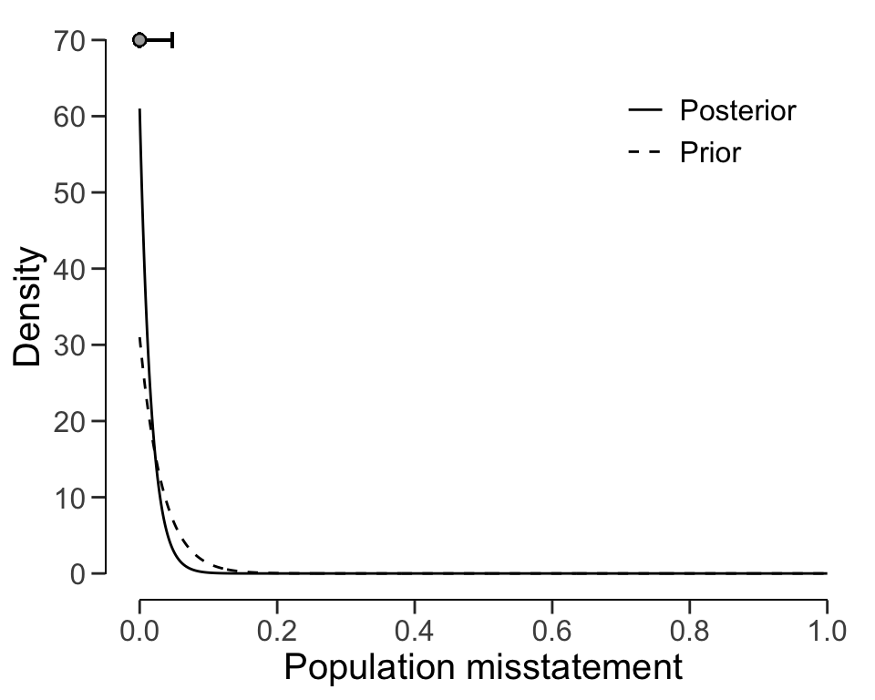

binom.test(x = 0, n = 60, p = 1, alternative = "less", conf.level = 0.95)
#>
#> Exact binomial test
#>
#> data: 0 and 60
#> number of successes = 0, number of trials = 60, p-value < 2.2e-16
#> alternative hypothesis: true probability of success is less than 1
#> 95 percent confidence interval:
#> 0.00000000 0.04870291
#> sample estimates:
#> probability of success
#> 02 Statistical Inference
In the field of probability theory, two prominent schools of thought have emerged: frequentism and Bayesianism. These two approaches offer distinct perspectives on how to interpret and reason about uncertainty and probability.
2.1 Classical Inference
Frequentist statistics, also known as classical statistics, is a statistical framework that is based on the concept of probability as a long-term frequency of events. This approach assumes that parameters in a statistical models have a true but hidden value and that data is generated by a well-defined process, which can be described by a set of probabilistic assumptions about the model parameters. The philosophy behind frequentist statistics is that statistical estimates should be based on the frequency of events over a long term, rather than on subjective or personal information. This statistical approach is particularly useful for making predictions or decisions based on data, as it allows for the calculation of confidence intervals and statistical tests, which provide a measure of the reliability of the estimates. Overall, frequentist statistics is a rigorous and reliable approach that is widely used in the scientific community for making decisions based on data. However, as we will discuss, it also has some drawbacks that make it less suitable for use in audit practice.
2.1.1 Estimation
The philosophy behind frequentist parameter estimation is based on the idea that statistical parameters are fixed, but unknown, quantities that can be estimated through the process of repeated sampling. This approach assumes that the sample data represent a random sample from a larger population, and that the sample statistics (i.e., the sample proportion of misstatements) can be used to estimate the corresponding population parameters (i.e., the population misstatement). The key principle of frequentist estimation is that the estimated parameter values should be unbiased and have a certain level of uncertainty, which can be quantified through confidence bounds or intervals.
2.1.1.1 Example
As an example, the binom.test() function in R can be used to estimate the rate of misstatement in a population given a data sample of \(n\) items containing \(k\) misstatements. Suppose an auditor audited a sample of \(n = 60\) items containing \(k = 0\) misstatements. To use the binom.test() function to perform estimation, the auditor must input the number of items in the sample n = 60, the number of misstatements in the sample x = 0, and the hypothesized proportion of misstatement in the population (i.e., the performance materiality), which is irrelevant and should thus be sert to p = 1. The sampling risk is set to 5 percent, which the auditor can provide to the function with conf.level = 1 - 0.05. Finally, the auditor can specify the alternative hypothesis as alternative = "less" to compute a one-sided confidence interval since they are interested in obtaining the upper confidence bound.
The most likely misstatement in the population is displayed under sample estimates and is 0 percent. The 95 percent upper confidence bound for the estimate of the population misstatement is displayed under 95 percent confidence interval and is 4.87 percent.
2.1.2 Hypothesis Testing
Frequentist hypothesis testing is a statistical method that involves evaluating the probability of obtaining a certain sample outcome or more extreme, given a certain assumption or hypothesis. This probability, known as the p value, is used to determine the likelihood of the hypothesis being true.
For example, in a typical audit sampling hypothesis test using the binomial distribution, we may be interested in testing the hypothesis that the misstatement is higher or lower than the performance materiality. We would inspect a sample and calculate the p value based on the observed frequency of misstatements versus the expected frequency under the assumption of material misstatement. If the p value is below the sampling risk \(\alpha\), we reject the hypothesis that the population is materially misstated and conclude that it is not materially misstated.
2.1.2.1 Example
Next to estimation, the binom.test() function in R can also be used to test if a population contains is free of material misstatement, which in this case means that the population contains less than 3 percent misstatements. Suppose an auditor obtained a sample of \(n = 100\) items containing \(k = 0\) misstatements. To use the binom.test() function, the auditor must input the number of items in the sample n = 100, the number of misstatements in the sample x = 0, and the hypothesized proportion of misstatement in the population (i.e., the performance materiality) p = 0.03. The sampling risk is set to 5 percent, which the auditor can provide to the function with conf.level = 1 - 0.05. Finally, the auditor can specify the alternative hypothesis as alternative = "less" to test if the proportion of misstatements in the sample is less than the hypothesized proportion.
binom.test(x = 0, n = 100, p = 0.03, alternative = "less", conf.level = 0.95)
#>
#> Exact binomial test
#>
#> data: 0 and 100
#> number of successes = 0, number of trials = 100, p-value = 0.04755
#> alternative hypothesis: true probability of success is less than 0.03
#> 95 percent confidence interval:
#> 0.00000000 0.02951305
#> sample estimates:
#> probability of success
#> 0The p value is shown under p-value and is 0.04755. Since the p value is lower than the specified sampling risk \(\alpha\), the auditor can reject the hypothesis that the population contains material misstatement and should conclude that the population does not contain material misstatement.
2.2 Bayesian Inference
Bayesian inference is based on the idea that the parameters in a statistical model are not fixed but uncertain. In this approach, the parameter is onsidered to be a random variable with a certain distribution, and the goal is to use the data and any prior knowledge about the parameter to update our belief about its value. This is typically done using Bayes’ theorem, which states that the posterior probability (i.e., the updated belief about the parameter after seeing the data) is equal to the prior probability (i.e., the belief about the parameter before seeing the data) times the likelihood (i.e., the probability of the data given the parameter).
\[\begin{equation} \text{Posterior} \propto \text{Likelihood} \times \text{Prior} \end{equation}\]
Bayesian statistics is a more nuanced approach that allows for more efficiency in statistical audit sampling, but it requires the specification of prior distributions that can be difficult to quantify. That is because, especially in an audit, all information that is incorporated into the statistical analysis should be based on audit evidence and should be properly justified.
2.2.1 Estimation
One major difference between classical and Bayesian statistics is the way they handle uncertainty. In classical statistics, uncertainty is represented by the standard error of an estimate, which is a measure of the precision of an estimate. In Bayesian statistics, uncertainty is represented by the posterior distribution, which is a distribution of the possible values of the population parameter given the sample data and our prior beliefs. Bayesian inferences uses uses Bayes’ theorem to update the prior beliefs about the population parameter with the new information from the sample data. Bayes’ theorem is given by the following formula:
\[\begin{equation} p(\theta | y) = \frac{p(y | \theta)p(\theta)}{p(y)} \end{equation}\]
where \(p(\theta | y)\) is the posterior probability of the population parameter \(\theta\) given the sample data \(y\), \(p(y | \theta)\) is the likelihood of the sample data given \(\theta\), \(p(\theta)\) is the prior probability of \(\theta\), and \(p(y)\) is the total probability of the sample data occurring. Because with a fixed sample \(p(y)\) is a constant, Bayes’ theorem is often given as follows:
\[\begin{equation} p(\theta | y) \propto p(y | \theta) \times p(\theta) \end{equation}\]
2.2.1.1 Example
Bayesian inference involves first specifying a prior distribution that captures the available information about the probability of misstatement in the population. For illustrative purposes, we use a simple prior distribution that is indifferent about the possible values of the misstatement. Note that this prior distribution does not contain any information about the probability of misstatement, but yields statistical results that closely resemble classical outcomes. This prior distribution is shown in Figure 2.3. Chapters 3, 4, 5 and 6 dive deeper into the R functions from the jfa package used in this example, such as the auditPrior() function below.
prior <- auditPrior(method = "default", likelihood = "binomial")
plot(prior)
After seeing an item from the population, the prior distribution is updated to the posterior distribution by means of Bayes’ theorem. Next, the posterior is used as a prior distribution for the following item, which is once again updated to a posterior distribution after seeing another the item. This process of updating the prior distribution to a posterior distribution, and using the posterior as a prior can continue indefinately. For example, after seeing 30 items from the population, of which none contained a misstatement, the posterior distribution peaks at zero, reflecting the fact that no misstatements were found, and its mass has shifted towards zero when compared to the prior distribution, reflecting the fact that the data contained information that indicates a low probability of misstatement. Figure 2.4 displays the prior and posterior distribution.
eval <- evaluation(x = 0, n = 30, method = "binomial", prior = prior)
plot(eval)The most likely value of the population misstatement based on these data is shown as a point above the highest point of the posterior distribution. The uncertainty about the population misstatement can be quantified using a credible interval (shown as a line above the posterior distribution). In this case, the figure above shows a 95 percent credible interval, which contains the true value of the population misstatement with a 95 percent probability.
After seeing 30 more observations, of which none contained a misstatement, the mass of the posterior distribution has shifted towards zero even more. The credible interval shown above the posterior distribution encompasses a smaller range of values, reflecting the fact that additional information has been observed and thus that there is less uncertainty about the population misstatement than before. This is displayed in Figure 2.5.
eval <- evaluation(x = 0, n = 30, method = "binomial", prior = eval$posterior)
plot(eval)
The updating process works the same for the scenario in which the auditor finds misstatements in the sample. For example, the posterior distribution after finding a single misstatement is has its mass shifted away from zero, reflecting the fact that a probability of zero is unlikely given the sample data, see Figure 2.6.
eval <- evaluation(x = 1, n = 1, method = "binomial", prior = eval$posterior)
plot(eval)
2.2.2 Hypothesis Testing
The Bayes factor is a measure used in Bayesian inference to compare the relative strength of evidence between two competing hypotheses. The Bayes factor is calculated by comparing the probability of the observed data given each of the two competing hypotheses. This probability is known as the likelihood of the data. The Bayes factor is then the ratio of the likelihood of the data under one hypothesis to the likelihood of the data under the other hypothesis. The Bayes factor can be used in the context of an audit, where the auditor is trying to determine the likelihood that a particular financial statement is represented fairly or not.
For example, an auditor might be evaluating the fairness of a company’s financial statements for the year. They have two hypotheses: the first is that the statements are accurate, and the second is that the statements are not accurate. The auditor gathers data from a statistical audit sample and uses this data to calculate the Bayes factor.
The Bayes factor is calculated by taking the ratio of the probability of the first hypothesis (that the statements are accurate) given the observed data, to the probability of the second hypothesis (that the statements are not accurate) given the observed data. The higher the Bayes factor, the more likely it is that the first hypothesis is true.
The Bayes factor can be used to assess the strength of evidence for one hypothesis over the other and to determine which hypothesis is more likely to be true given the observed data. It is often used in scientific research to help evaluate the validity of different hypotheses and to make informed decisions based on the available evidence. For auditors, the Bayes factor can be a useful tool to determine the likelihood of different hypotheses being true based on the data they have collected, and it can help them make informed decisions about the fairness of the financial statements.
For example, if the Bayes factor is 5, this means that the probability of the statements being accurate given the observed data is 5 times higher than the probability of them being not accurate. In this case, the auditor would be more likely to conclude that the financial statements are accurate.

2.2.2.1 Example
Suppose an auditor obtained a sample of \(n = 100\) items containing \(k = 0\) misstatements. Given the number of items in the sample n = 100, the number of misstatements in the sample x = 0, and the hypothesized proportion of misstatement in the population (i.e., the performance materiality) p = 0.03 the Bayes factor is displayed under BF10 and is 668.65, meaning that it the data are about 668 times more likely to occur under the hypothesis of tolerable misstatement than under the hypothesis of intolerable misstatement.
evaluation(materiality = 0.03, x = 0, n = 100, method = "binomial", prior = TRUE)
#>
#> Bayesian Audit Sample Evaluation
#>
#> data: 0 and 100
#> number of errors = 0, number of samples = 100, taint = 0, BF₁₀ =
#> 668.65
#> alternative hypothesis: true misstatement rate is less than 0.03
#> 95 percent credible interval:
#> 0.00000000 0.02922515
#> most likely estimate:
#> 0
#> results obtained via method 'binomial' + 'prior'